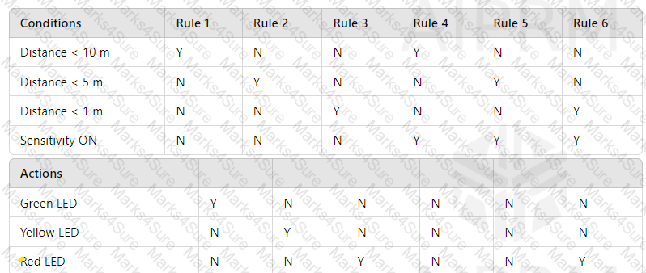
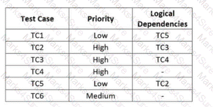

Which of the following does MOT describe a reason why testing is necessary?
A typical objective of testing is to
You are testing a system that is used in motor vehicles to warn the driver of an obstacle when re-versing. Output is provided by a series of LED lights (green, yellow, and red), each illuminated based on clearly defined conditions.
The following summary describes the functionality:
•Object within 10 metres, green LED lit.
•Object within 5 metres, yellow LED lit.
•Object within 1 metre, red LED lit.
•Setting sensitivity mode to "ON" will result in only the red LED being lit when the object is within 1 metre.
The following decision table describes the rules associated with the functioning of this proximity warning system:

Which intended functionality is tested by Rule 5 in the decision table?
Which of the following lists factors That contribute to PROJECT risks?
Your organization's test strategy states that it is desirable to usemore than one method for estimating test effort. You are responsible for estimating test effort for the next project. Based on historical data, thedevelopment-to-test effort ratiois5:3.
The initial estimate for thedevelopment effort is 450 person-days.
Which ONE of the following options corresponds to the estimatedtest effortusing the ratio-based method?
Which of the following is a possible reason for introducing a defect in software code?
Which ONE of the following options MOST ACCURATELY describes the activities of “testing” and “debugging”?
In a two-hour uninterrupted test session, performed as part of an iteration on an Agile project, a heuristic checklist was used to help the tester focus on some specific usability issues of a web application.
The unscripted tests produced by the tester's experience during such session belong to which one of the following testing quadrants?
The following sentences refer to the 'Standard for Software Test Documentation' specification (IEEE 829).
Which sentence is correct?
Which of the following BEST matches the descriptions with the different categories of test techniques?
1.Test cases are based on the test basis which may include the requirements, use cases and user stories
2.Test cases are based on the test basis which may include the software architecture or code
3.Test cases can show deviations from the requirements
4.These test techniques are applicable to both functional and non-functional testing
5.Tests are based on knowledge of developers, users and other stakeholders
Black - Black-box test techniques
White * White-box test techniques
Experience - Experience-based test techniques
Which of the following can be considered a VALID exit criterion?
I Estimates of defect density or reliability measures.
II. The completion and publication of an exhaustive Test Report.
III. Accuracy measures, such as code, functionality or risk coverage.
IV Residual risks such as lack of code coverage in certain areas.
You are responsible for applying the correct technique for a review of the requirements document for a project to develop a new software application. You identify the reviewers and the required roles, including the meeting leader, who is the requirements document author, and a separate role for a scribe. Additionally, you decide to take a relatively informal approach to the requirements review. The goal of the review is to find defects in the requirements document, such as omissions, Inconsistencies, and duplications. Another goal of the review is to improve the software application's usability and accessibility by considering the various stakeholders' viewpoints.
Which of the following statements BEST describes this scenario?
Confirmation testing is performed after:
Which ONE of the following options corresponds to an activity in the testing process in which testable features are identified?
Which of the following s the most correct statement about state testing techniques?
Which ONE of the following work products TYPICALLY belongs to test execution?
Consider the following examples of risks identified in different software development projects
[1]. It may not be possible to generate the expected workloads to run performance tests, due to the poor hardware equipment of the machines (load injectors) that should generate these workloads.
[ii]. A user's session on a web application is not invalidated after a certain period of inactivity (configured by the system administrator) of the user,
[iii]. The test team will not have an adequate requirements specification (since many requirements will still be missing) by the time test design and analysis activities should begin according to the test plan.
[IV]. Following a failure, the system is unable to continue to maintain its pre-failure operation and some data becomes corrupted.
Which of the following statements is TRUE?
Which of the following characterizations applies to a test tool used for the analysis of a developer's code prior to its execution?
Which review type, also known as a “buddy check”, is commonly used in Agile development?
Which ONE of the following options CORRECTLY describes one of the seven principles of the testing process?
Consider the following list of activities (I to V):
I. Test design
II. Test planning
III. Review test basis
IV. Be a facilitator of a peer review
V. Test monitoring and control
Which ONE of the following options identifies the activities that the test management role is MAINLY focused on?
You are testing a room upgrade system for a hotel. The system accepts three differed types of room (increasing order of luxury): Platinum. Silver and Gold Luxury. ONLY a Preferred Guest Card holder s eligible for an upgrade.
Below you can find the decision table defining the upgrade eligibility:
What is the expected result for each of the following test cases?
Customer A: Preference Guest Card holder, holding a Silver room
Customer B: Non Preferred Guest Card holder, holding a Platinum room
A class grade application for instructors assigns letter grades based on students' numerical grades.
The letter grades for different numerical grades should be:
Above 89, up to 100 - A
Above 79, up to 89 • B
Above 69, up to 79 • C
Above 59, up to 69 - D
Below 60- F
Which of the following sets of test inputs would achieve the relatively highest equivalence partition coverage?
Which TWO of the following are benefits of continuous integration?
I. Allows earlier detection and easier root cause analysis of integration problems and conflicting changes.
II. Removes the need for manual test analysis, design and execution.
Hi. Removes the dependency on automated regression packs when integrating larger systems, or components.
iv. Gives the development team regular feedback on whether the code is working.
Select the correct answer:
A test engineer finds a defect while testing. After the developer has fixed the defect, the test engineer decides to re-run a complete section of the tests. Which of the following is correct?
The following rules determine the annual bonus to be paid to a salesman of a company based on the total annual amount of the sales made (referred to as TAS).
If the TAS is between 50k€ and 80k€, the bonus is 10%. If the TAS exceeds 80k€ by a value not greater than 40k€, the bonus is 15%. Finally, if the TAS
exceeds the maximum threshold which entitles to a 15% bonus, the bonus is 22%.
Consider applying equivalence partitioning to the TAS (Note: 1k€ = 1000 euros).
Which one of the following answers contain only test cases that belong to the same equivalence partition?
Which of the following is not an example of a typical generic skill required for testing?
In maintenance testing, what is the relationship between impact analysis and regression testing?
For each of the test cases to be executed, the following table specifies the priority order and dependencies on other test cases

Which of the following test execution schedules is compatible with the logical dependencies and allows executing the test cases in priority order?
A software application incorrectly provided customers discounts of 50% off their total purchases if the purchases exceeded S100. It was discovered through an audit that the discount should have been only 5% off these purchases. A root cause analysis uncovered that the requirements Incorrectly stated 50% instead of 5% in this scenario.
Which of the following MOST accurately reflects this scenario?
Which of the following statements about estimation of the test effort is WRONG?
From a testing perspective, configuration management
Which of the following is a typical product risk?
Which sequence of state transition stated in the answer choices is correct in accordance with the following figure depicting me life-cycle of a defect?
Which of the following statements about checklist-based testing is TRUE?
In the newest version of payroll system number of changes were made. As a tester you got a task to perform regression and confirmation tests. Which of the following project activities are related to confirmation testing?
The following open incident report provided:
Date: 01.01.01
Description: When pressing the stop button the application status remain in "Attention" instead of "Ready'.
Severity: High
Life Cycle: Integration
Which of the following details are missing in the giving incident report?
I. Identification or configuration of the application
II. The name of the developer
III. Recommendation of the developer
IV The actions and/or conditions that came before the pressing of the button
Consider a given test plan which, among others, contains the following three sections: "Test Scope", "Testing Communication", and "Stakeholders". The features of the test object to be tested and those excluded from the testing represent information that is:
Which ONE of the following tools would be MOST SUITABLE for facilitating thecreation of test cases, test data, and test procedures?
Which of the following project scenario gives the BEST example where maintenance testing should be triggered?
The fact that defects are usually not evenly distributed among the various modules that make up a software application, but rather their distribution tend to reflect the Pareto principle:
Which ONE of the following elements is TYPICALLY used to guide testing duringexploratory testing?
Which of the following statements about the testing quadrants is TRUE?
As a tester, as part of a V-model project, you are currently executing some tests aimed at verifying if a mobile app asks the user to grant the proper access permissions during the installation process and after the installation process. The requirements specification states that in both cases the app shall ask the user to grant access permissions only to the camera and photos stored on the device. However, you observe that the app also asks the user to grant access permission to all contacts on the device. Consider the following items:
[I]. Test environment
[ii]. Expected result
[iii]. Actual result.
[IV] Test level.
[V]. Root cause.
Based on only the given information, which of the items listed above, are you able to CORRECTLY specify in a defect report?
Which ONE of the following statements BEST applies tochecklist-based testing?
In what way do Configuration Management effects testing?
Which of the following is a key characteristic of informal reviews?
To be able to define testable acceptance criteria, specific topics need to be addressed. In the table below are the topics matched to an incorrect description. Match the topics (the left column) with the correct description (the right column)
TopicDescription
Which one of the following statements IS NOT a valid objective of testing?
For the following pseudo-code determine number of tests required for 100% statement coverage
IF Gender = Boy
If Age > 3 AND Age < 5
Shoe Size = 1
ELSE IF Age >=5 AND Age < 7
Shoe Size = 2
ENDIF
ELSE
IF Age > 3 AND Age < 5
Shoe Size = 0
ELSE IF Age >=5 AND Age < 7
Shoe Size = 1
ENDIF
ENDIF
Which of the following BEST explains a drawback of independent testing?
Who of the following has the best knowledge to decide what tests in a test project should be automated?
Your manager asked you when testing will be complete. In order to answer this question, you'll most likely use:
You are testing a system that is used in motor vehicles to warn the driver of an obstacle when re-versing. Output is provided by a series of LED lights (green, yellow, and red), each illuminated based on clearly defined conditions.
The following summary describes the functionality:
•Object within 10 metres, green LED lit.
•Object within 5 metres, yellow LED lit.
•Object within 1 metre, red LED lit.
•Setting sensitivity mode to "ON" will result in only the red LED being lit when the object is within 1 metre.
The following decision table describes the rules associated with the functioning of this proximity warning system:
Which intended functionality is tested by Rule 5 in the decision table?
A typical objective of testing is to
Which of the following does MOT describe a reason why testing is necessary?
Which of the following statements BEST describes how test cases are derived from a use case?
4 equivalence classes are given for integer values:
0 < x <100
100<= x <= 200
200 < x < 500
x >= 500
Which of the following options represent correct set of data for valid equivalence class partitions?
A state transition diagram describes a control system’s behavior in different operational modes. The initial state is“NORMAL MODE”.
Which ONE of the following test cases covers anINVALID sequence?
Which of the following types of tools is BEST suited for determining source code compliance with the guidelines provided by a coding standard?
In which of the following test documents would you expect to find test exit criteria described9
Which of the following is a test task that usually occurs during test implementation?
Which of the following statements about static testing and dynamic testing is TRUE?
Which of the following is the BEST reason for selecting a particular type of software development lifecycle model?
You need to test the login page of a web site. The page contains fields for user name and password. Which test design techniques are most appropriate for this case?
A program got 100% decision coverage in a test. Which of the following statements is then guaranteed to betrue?
A bank software has a feature of locking down accounts that have and overdraft higher than $10,000.
Due to a bug in the code, the system locks down accounts once they reached $1000 overdraft.
Based on this context, which of the following is correct statement
Which of the following statements is true?
Which of the following applications will be the MOST suitable for testing by Use Cases
During component testing of a program if 100% decision coverage is achieved, which of the following coverage criteria is also guaranteed to be 100%?
Given the following state model of sales order software:
PLACED -> IN PRODUCTION
IN PRODUCTION -> CANCELLED
IN PRODUCTION -> SHIPPED
SHIPPED -> INVOICED
INVOICED -> CANCELLED
CANCELLED -> PLACED
Which of the following sequences of transitions provides the highest level of transition coverage for the model (assuming you can start in any state)?
The following 4 equivalence classes are given:
Which of the following alternatives includes correct test values for x. based on equivalence partitioning?
Which ONE of the following elements is TYPICALLYNOTpart of atest progress report?
Consider the following code
int premium=2500;
if (age<30)
{
premium = premium +1500:
}
Which options suits for a correct combination of Boundary value and expected result. Assume first number as boundary followed by expected result.
Atypical generic skill required for the role of tester is the ability to
Which of the following statements about testware are correct?
I When closing the test activities, all the testware resources can be uninstalled and released
II All the testware should be subject to Configuration Management
III. The testware. at the end of the project, should be transferred to the organization responsible for maintenance
IV The developers are responsible for the correct installation of the testware
Which of the following statements about retrospectives is TRUE?
Which of the following isNOTa product risk?
Which of the following is a factor that contributes to a successful review?
You are testing an e-commerce system that sporadically fails to properly manage customers' shopping carts. You have stressed the urgency of this situation to the development manager and development team and they recognize the priority of resolving the underlying defect. The development team is waiting for more information, which you will include in your defect report. Given the following items of information they are included in a typical defect report:
1. The expected results
2. The actual results
3. The urgency and priority to fix this
4. The date and author of the defect report
5. A description of the defect in order to reproduce, including screenshots and database dumps
Which of these items will be MOST useful to the developers to help them identify and remove the defect causing this failure?
Which of the following coverage criteria results in the highest coverage for state transition based test cases?
You are an experienced tester on a project with incomplete requirements and under pressure to deploy.
What type of testing should you do?
Which ONE of the following options BEST describes black-box test techniques?
Which of the following statements about the test pyramid is TRUE?
A requirement specifies that if the total amount of sales (TAS) made during the year by a corporate seller is 300,000€ or more, the bonus that must be paid to the seller is 100% of a certain amount agreed upon at the beginning of the year. The software contains a fault as it implements this requirement with the decision "IF (TAS = 300,000)" instead of "IF (TAS >= 300.000)". The application of the 3-value boundary value analysis to this problem consists of the following three test cases (TAS is an integer variable):
TC1 = 299,999 TC2=300,000 TC=300,001
Which of the following statements is TRUE?
Which of the following statements about traceability is FALSE?
The whole-team approach:
Which of the following is a CORRECT statement about how a tester should communicate about defects, test results, and other test information?
When should component integration tests be carried out?
The ISTOB glossary defines Quality Assurance as: "Pail or quality management focused on providing confidence that quality requirements will be fulfilled. Which of the following Is not one of the Quality Assurance activity?
A document descnbes the test procedures that have been derived for the identified test sets Among other things, the order in which the test cases in the corresponding test set are to be executed according to the dependencies described by preconditions and postconditions is specified This document is a typical work product produced as part of:
A test manager defined the following test levels in her test plan; Component, System and Acceptance.
Which Software Development lifecycle is the Test Manager most likely following?
The acceptance criteria associated with a user story:
Which of the following statements about the value of maintaining traceability between the test basis and test work products is not true?
A requirement specifies that a certain identifier (ID) must be between 5 and 10 characters long, must contain only alphanumenc characters, and its first character must be a letter As a tester, you want to apply one-dimensional equivalence partitioning to test this ID. This means that you have to apply equivalence partitioning individually: to the length of the ID, the type of characters contained within the ID, and the type of the first character of the ID. What is the number of partitions to cover?
Which of the following would be the LEAST likely to be used as the basis for a test exit criteria?
As the last stage of a test cycle of an embedded device, you are performing exploratory testing. You observed that some character. (A, X andZ)sent via a serial port to the device do not get registered on the device whereas they should be. You suspect that this could be due to a wrong configuration of the "bit parity" parameter.
Which of the following items of an incident report would you beUNABLEto write down based on this information?
During which main group of test activity are the following tasks performed?
•Checking test results and logs against specified coverage criteria.
•Assessing the level of component or system quality based on test results and logs.
•Determining whether more tests are needed.
Select the correct answer: